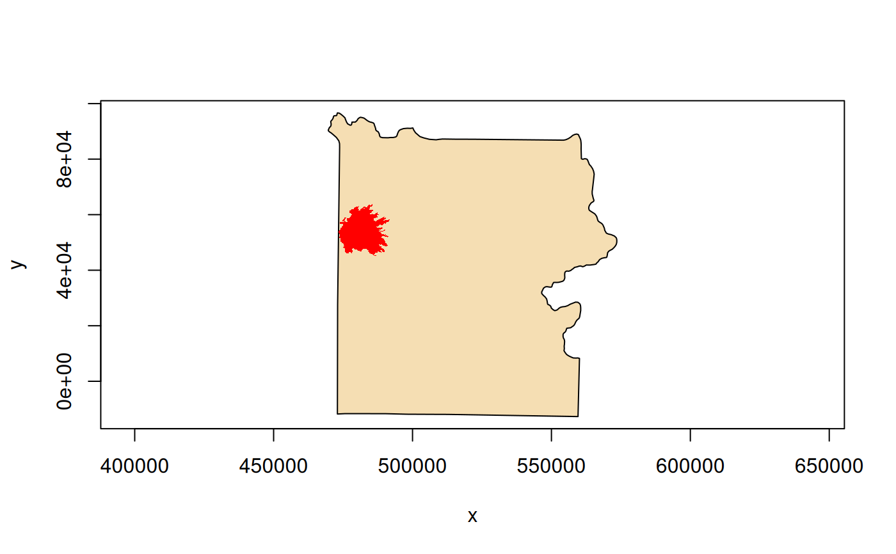

ogr_reproject() reprojects the features of a vector layer to a different
spatial reference system and writes the new layer to a specified output
dataset. The output may be in a different vector file format than the input
dataset. A source SRS definition must be available in the source layer
for reprojection to occur.
Usage
ogr_reproject(
src_dsn,
src_layer,
out_dsn,
out_srs,
out_fmt = NULL,
overwrite = FALSE,
append = FALSE,
nln = NULL,
nlt = NULL,
dsco = NULL,
lco = NULL,
dialect = NULL,
spat_bbox = NULL,
src_open_options = NULL,
progress = FALSE,
add_cl_arg = NULL,
return_obj = TRUE
)Arguments
- src_dsn
Character string. The filename or database connection string specifying the vector data source containing the input layer.
- src_layer
Character string. The name of the input layer in
src_dsnto reproject. Optionally can be given as an SQL SELECT statement to be executed againstsrc_dsn, defining the source layer as the result set. May also be given as empty string (""), in which case the first layer by index will be used (mainly useful for single-layer file formats such as ESRI Shapefile).- out_dsn
Character string. The filename or database connection string specifying the vector data source to which the output layer will be written.
- out_srs
Character string specifying the output spatial reference system. May be in WKT format or any of the formats supported by
srs_to_wkt().- out_fmt
Optional character string giving the GDAL short name of the output dataset format. Only used if
out_dsnneeds to be created. Generally can beNULLin which case the format will be guessed from the file extension.- overwrite
Logical value.
TRUEto overwrite the output layer if it already exists. Defaults toFALSE.- append
Logical value.
TRUEto append to the output layer if it already exists. Defaults toFALSE.- nln
Optional character string giving an alternate name to assign the new layer. By default,
src_layeris used, butnlnis required ifsrc_layeris a SQL SELECT statement.- nlt
Optional character string to define the geometry type for the output layer. Mainly useful when
nlt = PROMOTE_TO_MULTImight be given to automatically promote layers that mix polygon / multipolygons to multipolygons, and layers that mix linestrings / multilinestrings to multilinestrings. Can be useful when converting shapefiles to PostGIS and other output formats that implement strict checks for geometry types.- dsco
Optional character vector of format-specific creation options for
out_dsn("NAME=VALUE"pairs). Should only be used ifout_dsndoes not already exist.- lco
Optional character vector of format-specific creation options for the output layer (
"NAME=VALUE"pairs). Should not be used if appending to an existing layer.- dialect
Optional character string specifying the SQL dialect to use. The OGR SQL engine (
"OGRSQL") will be used by default if a value is not given. The"SQLite"dialect can also be use. Only relevant ifsrc_layeris given as a SQL SELECT statement.- spat_bbox
Optional numeric vector of length four specifying a spatial bounding box (xmin, ymin, xmax, ymax), in the SRS of the source layer. Only features whose geometry intersects
spat_bboxwill be selected for reprojection.- src_open_options
Optional character vector of dataset open options for
src_dsn(format-specific"NAME=VALUE"pairs).- progress
Logical value,
TRUEto display progress on the terminal. Defaults toFALSE. Only works if the input layer has "fast feature count" capability.- add_cl_arg
Optional character vector of additional command-line arguments to be passed to
ogr2ogr()(see Note).- return_obj
Logical value,
TRUEto return an object of classGDALVectoropen on the output layer (the default).
Value
Upon successful completion, an object of class GDALVector is
returned by default (if return_obj = TRUE), or logical TRUE is returned
(invisibly) if return_obj = FALSE. An error is raised if reprojection
fails.
Details
ogr_reproject() is a convenience wrapper to perform vector reprojection
via ogr2ogr(), which in turn is an API binding to GDAL's ogr2ogr
command-line utility.
Note
For advanced use, additional command-line arguments may be passed to
ogr2ogr() in add_cl_arg (e.g., advanced geometry and SRS related
options). Users should be aware of possible implications and
compatibility with the arguments already implied by the parameterization
of ogr_reproject().
The function will attempt to create the output datasource if it does not already exist. Some formats (e.g., PostgreSQL) do not support creation of new datasets (i.e., a database within PostgreSQL), but output layers can be written to an existing database.
See also
ogr2ogr(), warp() for raster reprojection
GDAL documentation for ogr2ogr:
https://gdal.org/en/stable/programs/ogr2ogr.html
Examples
# MTBS fire perimeters
f <- system.file("extdata/ynp_fires_1984_2022.gpkg", package = "gdalraster")
(mtbs <- new(GDALVector, f, "mtbs_perims"))
#> C++ object of class GDALVector
#> Driver : GeoPackage (GPKG)
#> DSN : /home/runner/work/_temp/Library/gdalraster/extdata/ynp_fires_1984_2022.gpkg
#> Layer : mtbs_perims
#> CRS : NAD83 / Montana (EPSG:32100)
#> Geom : MULTIPOLYGON
mtbs$getSpatialRef() |> srs_is_projected() # TRUE
#> [1] TRUE
# YNP boundary
f <- system.file("extdata/ynp_features.zip", package = "gdalraster")
ynp_dsn <- file.path("/vsizip", f, "ynp_features.gpkg")
(bnd <- new(GDALVector, ynp_dsn, "ynp_bnd"))
#> C++ object of class GDALVector
#> Driver : GeoPackage (GPKG)
#> DSN : /vsizip//home/runner/work/_temp/Library/gdalraster/extdata/ynp_features.zip/ynp_features.gpkg
#> Layer : ynp_bnd
#> CRS : NAD83 (EPSG:4269)
#> Geom : POLYGON
bnd$getSpatialRef() |> srs_is_projected() # FALSE
#> [1] FALSE
# project the boundary to match the MTBS layer
out_dsn <- tempfile(fileext = ".gpkg")
(bnd_mtsp <- ogr_reproject(ynp_dsn, "ynp_bnd", out_dsn, mtbs$getSpatialRef()))
#> C++ object of class GDALVector
#> Driver : GeoPackage (GPKG)
#> DSN : /tmp/RtmpbvhFWO/file236c3a30719.gpkg
#> Layer : ynp_bnd
#> CRS : NAD83 / Montana (EPSG:32100)
#> Geom : POLYGON
bnd_mtsp$getFeatureCount()
#> [1] 1
plot(bnd_mtsp$getNextFeature(), col = "wheat")
mtbs$setAttributeFilter("incid_name = 'MAPLE'")
mtbs$getFeatureCount() # 1
#> [1] 1
(feat <- mtbs$getNextFeature())
#> OGR feature
#> $FID
#> integer64
#> [1] 56
#>
#> $event_id
#> [1] WY4474311097820160809
#>
#> $incid_name
#> [1] MAPLE
#>
#> $incid_type
#> [1] Wildfire
#>
#> $map_id
#> integer64
#> [1] 10005020
#>
#> $burn_bnd_ac
#> integer64
#> [1] 103193
#>
#> $burn_bnd_lat
#> [1] 44.731
#>
#> $burn_bnd_lon
#> [1] -110.982
#>
#> $ig_date
#> [1] 2016-08-09
#>
#> $ig_year
#> [1] 2016
#>
#> $geom
#> [1] WKB MULTIPOLYGON: raw 01 06 00 00 ...
#>
plot(feat, col = "red", border = NA, add = TRUE)

mtbs$close()
bnd$close()
bnd_mtsp$close()